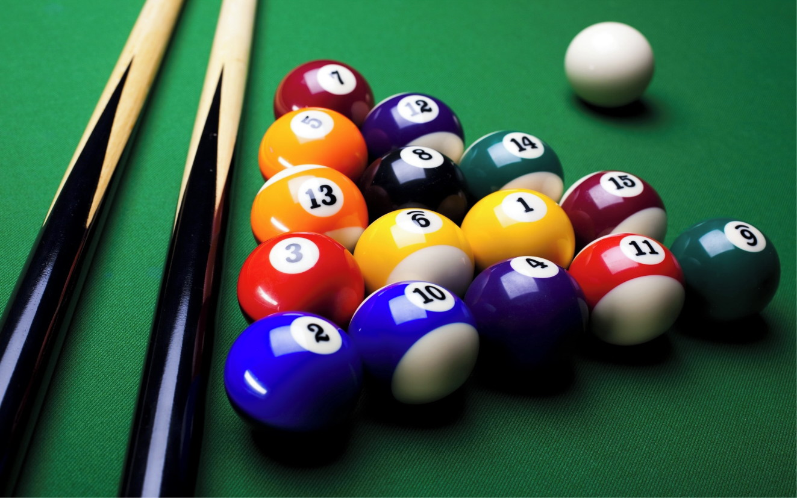
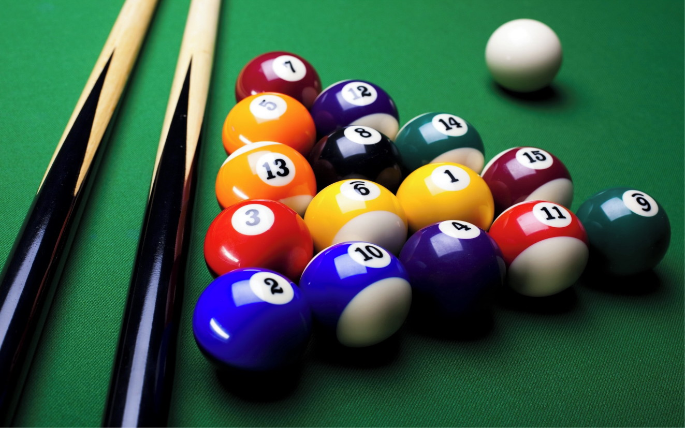

Sinuca
Sinuca (/siˈnukə/) ou snooker (/ˈʃnukə/) é um esporte de mesa, taco e bolas praticado no Brasil, e constitui uma variante do pool, um jogo de mesa inventado em 1875 na Grã-Bretanha. Neste jogo dois adversários tentam colocar num dos seis buracos da mesa as bolas coloridas (não brancas) na sequência definida pelas regras. Pode ser jogado individualmente ou em dupla ou com 3 jogadores e 15 bolas na mesa, 5 bolas para as bolas de número 1 a 5, 6 a 10 e assim por diante. Numa mesa de 2,84 m x 1,42 m (medida brasileira), são colocadas oito bolas, com pontuação de 1 (vermelha) a 8 (preta) mais a bola branca.
Regulamentação
A disposição das bolas na sinuca As regras em vigor no Brasil são ligeiramente diferentes das do pool praticado no resto do mundo: a bola branca é utilizada para impulsionar as outras até alguma das seis caçapas da mesa.[2] Denomina-se bola da vez a bola colorida de menor pontuação presente na mesa, ou seja, deve-se encaçapá-las em sequência numérica crescente. Ela é livre, isto é, o jogador não perde pontos caso erre quando tenta encaçapar (matar) essa bola. Se for encaçapada uma bola que não é a da vez, ela retorna à mesa na sua posição anterior. A mesa original, inglesa, possui mais 50 centímetros, tanto na largura quanto no comprimento, com 15 bolas vermelhas (bola 1) ao invés de apenas uma, como no Brasil, e regras diferentes da nossa adaptação. Hoje, há uma tendência, principalmente em campeonatos oficiais, de se jogar na "regra inglesa" (ver descrição da mesma em snooker), visando a internacionalizar os atletas brasileiros. Partida No começo da partida, o jogador deverá posicionar a bola no semicírculo desenhado ao lado esquerdo da mesa, a meia-lua. O objetivo inicial, é atingir a bola vermelha, mas sem encaçapá-la. Isto apenas na primeira jogada. Nesta, caso outra bola seja tocada o jogo recomeça. O mesmo jogador tem direito de tentar esta jogada por três vezes. Se ainda assim não conseguir, será punido perdendo sete pontos e terá que passar a vez ao seu adversário. A segunda tacada pode ser iniciada com a bola da vez, sem risco de penalidade, ou em qualquer uma das bolas, mas desta forma, se o jogador errar, poderá ser punido com sete pontos. Caso acerte, no entanto, ganhará os pontos da bola e também terá direito a mais uma tacada. A partir desta nova jogada, a bola objetivada deverá ser obrigatoriamente a bola da vez. Quando o jogador consegue encaçapar a bola da vez, além dos ganhos citados anteriormente, ele ganha uma bola bônus, ou seja, ele pode tentar encaçapar qualquer bola, sem ser na ordem do jogo e não será penalizado caso a bola tentada não seja encaçapada, exceto quando ocorre outra falta que não seja o não encaçapamento desta. Caso esta bola bônus seja encaçapada, o jogador ganhará os pontos referentes a ela, e mais uma tacada, neste caso, valendo a penalidade para as bolas que não sejam da vez. O jogo deve correr normalmente, então, seguindo a bola da vez e repetindo as regras citadas anteriormente.
Técnicas
do taco O maior problema encontrado entre os iniciantes da sinuca é o mau posicionamento do taco, que geralmente é utilizado com a parte de trás muito elevada. Isso faz com que a bola branca seja forçada de cima para baixo, afundando no pano e desviando-se do alinhamento. Obtém-se um melhor desempenho se o taco for colocado o mais próximo possível da posição horizontal. Os lances de execução mais complicada são aqueles em que a bola branca está colada ou encavalada, justamente por requererem o levantamento da parte de trás do taco. Da mesma forma, também não se deve baixá-la demais: no âmbito de se posicionar o taco horizontalmente, pode-se cometer o erro de baixar demais a parte de trás do taco, de tal forma que esta poderá bater na tabela no momento da execução da tacada desviando o taco da posição correta. Às vezes essa batida é muito sutil e pode nem ser percebida, mas qualquer toque, por mais sutil que seja, pode ser suficiente para fazer errar a jogada. Esse equívoco de baixar demais o taco é muito comum e acontece porque a tabela da mesa de sinuca é mais alta que o plano onde as bolas rolam, fato que, com exceção de algumas jogadas, impede de se obter uma posição precisamente horizontal. Daí se depreende que a horizontalidade do taco é uma questão bastante delicada, merecedora de um estudo atento por parte do praticante, que, à medida que tenta colocar o taco o máximo possível na horizontal, não deve ultrapassar os limites que proporcionam a sua livre movimentação.
Seja bem vindo ao site Oficial do Baianinho de Mauá!!
Galeria da Sinuca

 
